1.5.2.1 OCI Logging을 사용한 애플리케이션 로그 모니터링
OKE 상에 배포되어 있는 애플리케이션 로그 모니터링을 OCI Logging 서비스를 통해 모니터링할 수 있습니다.
OCI Logging 서비스 사용 권한 설정
Worker Node에 대한 Dynamic Group 만들기
-
OCI 콘솔에 로그인합니다.
-
좌측 상단 햄버거 메뉴에서 Identity & Security > Identity > Compartments로 이동합니다.
-
OKE 클러스터가 있는 Compartment의 OCID를 확인합니다.
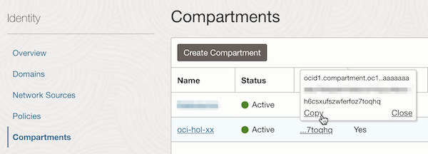
-
좌측 Dynamic Group 메뉴로 이동하여 아래 규칙을 가진 Dynamic Group을 만듭니다.
instance.compartment.id = '<compartment-ocid>'- Name: 예, oke-nodes-dynamic-group
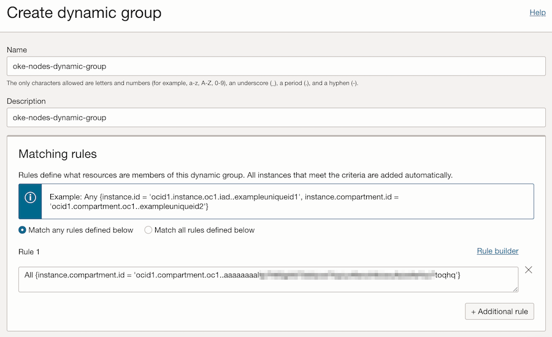
Dynamic Group에 대한 OCI Logging 서비스 권한 부여하기
-
좌측 Policy 메뉴로 이동하여 아래 규칙을 가진 Policy을 만듭니다. 방금 생성한 Dynamic Group에 대한 Policy를 만듭니다.
allow dynamic-group <dynamic-group-name> to use log-content in compartment <compartment-name>- Name: 예, oke-logging-policy

컨테이너를 위한 Custom Log 설정하기
Log Group 만들기
Log Group은 로그들을 관리하는 말 그대로 로그의 묶음 단위 입니다. 로그들을 담는 그릇으로 그룹이 없는 경우에 먼저 만듭니다.
-
좌측 상단 햄버거 메뉴에서 Observability & Management > Logging > Log Groups로 이동합니다.
-
Create Log Group을 클릭하여 로그 그룹을 만듭니다.
- Name: 예, oke-log-group
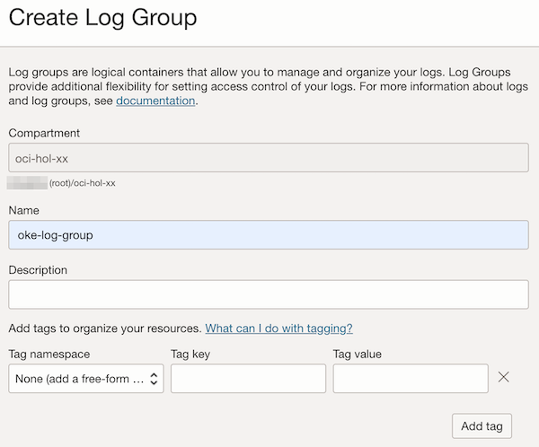
Custom Log 만들기
Custom Log는 OCI 서비스 로그이외 애플리케이션에서 수집하는 로그를 말합니다. Custom Log를 정의하고, 이에 대한 로그 수집기를 정의합니다.
-
Resources > Logs 메뉴로 이동하여 Create custom log를 클릭합니다.
-
로그 이름과 보관 주기 등을 설정하여 custom log를 만듭니다.
- Name: 예, oke-custom-log-for-containers
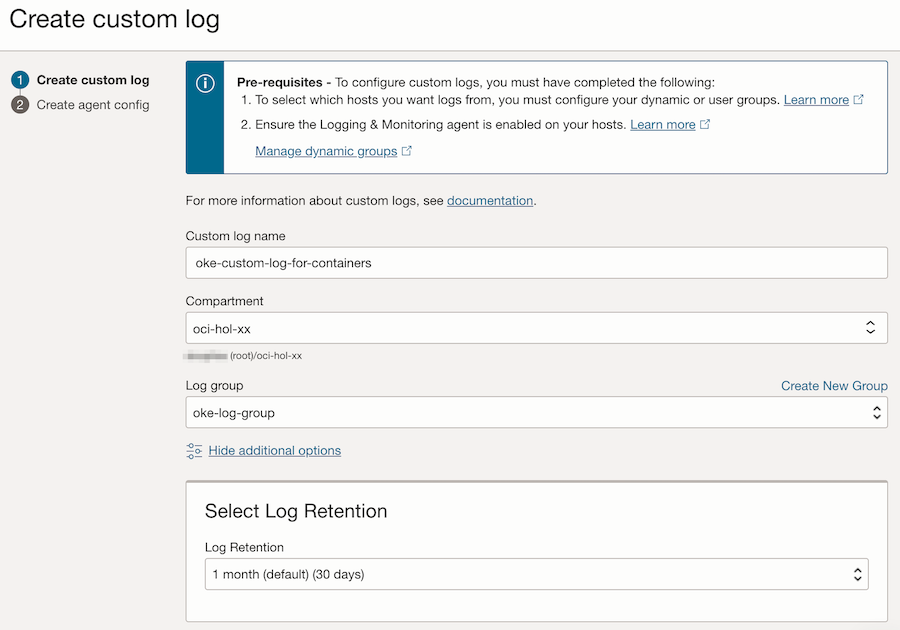
-
이해를 돕고자 Agent는 별도로 설정합니다. 여기서는 일단 Add configuration later 선택
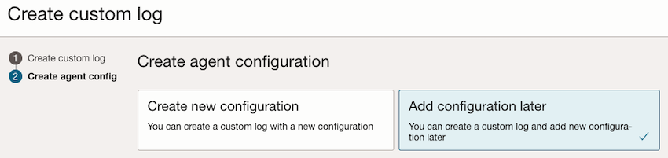
Agent Configuration 설정
Agent Configuration는 로그를 수집하는 agent를 설정하는 부분입니다.
-
Logging > Agent Configurations 메뉴로 이동하여 Create agent log를 클릭합니다.
-
Agent 설정 정보를 입력합니다.
- Name: 예, oke-agent-conf-for-containers
- Host Group:
- Agent가 설치될 대상을 지정합니다. 여기서는 앞서 만든 Dynamic Group으로 지정합니다.
- Worker Node가 동적으로 생성,삭제가 될 텐데, 그 Worker Nodes의 그룹이 앞서 만든 Dynamic Group에 속한 컴퓨트 인스턴스입니다.
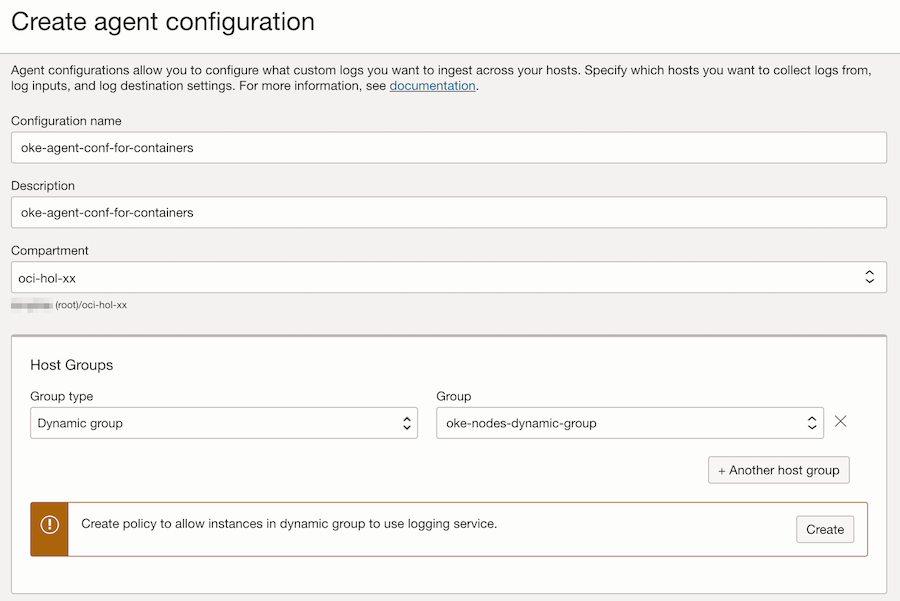
-
Agent 설정 부분에서 로그가 위치한 경로 및 수집된 로그의 전달 위치를 지정합니다.
-
log input:
-
Worker Node 컴퓨트 인스턴스 내에서 수집할 로그가 위치한 경로를 지정합니다. 사전에 약속된 다음 위치를 지정합니다.입력하고 엔터키를 꼭 칩니다.
-
/var/log/containers/*.log
-
-
log destination: 수집한 로그를 전달한 OCI Log 이름을 입력합니다. 앞서 생성한 custom log 이름을 지정합니다.
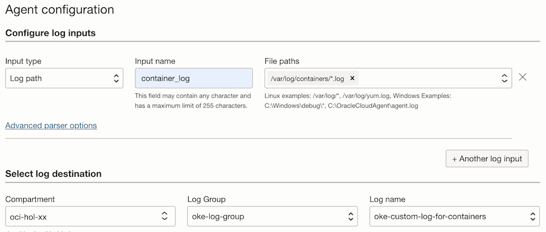
-
참고: Worker Node VM상에 컨테이너 로그 위치
-
Worker Node VM에 SSH로 접속이 가능한 환경, 예) bastion host에서 Worker Node에 접속해 보면 컨테이너 로그 위치는 다음과 같습니다.
[opc@bastion-host ~]$ ssh opc@10.0.10.193 Activate the web console with: systemctl enable --now cockpit.socket Last login: Wed Jul 5 08:48:08 2023 from 10.0.20.229 [opc@oke-cjakv5mqtna-nlhwbs5hpiq-s4dpxie44pa-2 ~]$ sudo su [root@oke-cjakv5mqtna-nlhwbs5hpiq-s4dpxie44pa-2 opc]# cd /var/log/containers/ [root@oke-cjakv5mqtna-nlhwbs5hpiq-s4dpxie44pa-2 containers]# ls -la total 20 drwxr-xr-x. 2 root root 12288 Jul 5 08:46 . drwxr-xr-x. 15 root root 4096 Jul 2 03:43 .. ... lrwxrwxrwx. 1 root root 101 Jun 30 15:22 coredns-5885f64884-nfmdn_kube-system_coredns-058942ad4a45004af37030ae13cfafbb0c5d7299ec061d392ed6f512bd1ca5ce.log -> /var/log/pods/kube-system_coredns-5885f64884-nfmdn_2bcc9282-d6b8-4427-9763-89530a48500a/coredns/0.log ... lrwxrwxrwx. 1 root root 104 Jul 5 08:46 nginx-docker-hub-67c59cc7d5-p9g9t_default_nginx-3744e08196e1f115d5d77bc95975ffb40c1bcf1669a6386feb83674834505e29.log -> /var/log/pods/default_nginx-docker-hub-67c59cc7d5-p9g9t_d4c014bf-b395-4250-add2-c3efd94ac4ec/nginx/0.log ... -
/var/log/containers/*.log는 위에서 보는 것처럼 링크라서 kubernetes namespace 기준으로 하고 싶다면, 로그 경로를 default namespace인 경우/var/log/pods/default_*/*/*.log이렇게 해도 되겠습니다.
로깅 테스트
-
애플리케이션 로그 확인을 위해 이전 가이드에 샘플로 배포된 nginx 앱을 접속해 봅니다.
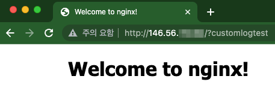
-
발생한 POD 로그는 다음과 같습니다.
$ kubectl logs -f nginx-docker-hub-67c59cc7d5-p9g9t ... 127.0.0.6 - - [05/Jul/2023:08:50:42 +0000] "GET /?customlogtest HTTP/1.1" 200 615 "-" "Mozilla/5.0 (Macintosh; Intel Mac OS X 10_15_7) AppleWebKit/537.36 (KHTML, like Gecko) Chrome/114.0.0.0 Safari/537.36" "10.179.86.108" -
동일한 로그가 Worker Node VM 상에서도 로그를 조회해 보면
/var/log/containers/*.log위치에 발생하는 것을 확인 할 수 있습니다.[root@oke-cjakv5mqtna-nlhwbs5hpiq-s4dpxie44pa-2 containers]# pwd /var/log/containers [root@oke-cjakv5mqtna-nlhwbs5hpiq-s4dpxie44pa-2 containers]# tail -f nginx-docker-hub-67c59cc7d5-p9g9t_default_nginx-3744e08196e1f115d5d77bc95975ffb40c1bcf1669a6386feb83674834505e29.log ... 2023-07-05T08:50:42.746094280+00:00 stdout F 127.0.0.6 - - [05/Jul/2023:08:50:42 +0000] "GET /?customlogtest HTTP/1.1" 200 615 "-" "Mozilla/5.0 (Macintosh; Intel Mac OS X 10_15_7) AppleWebKit/537.36 (KHTML, like Gecko) Chrome/114.0.0.0 Safari/537.36" "10.179.86.108" -
OCI 서비스 콘솔에서 Log 화면으로 다시 돌아갑니다.
-
화면에서 Resources > Explore Log에서 로그를 조회 할 수 있습니다. 검색을 위해서는 로그목록 오른쪽 위에 있는 Explore with Log Search를 클릭합니다.
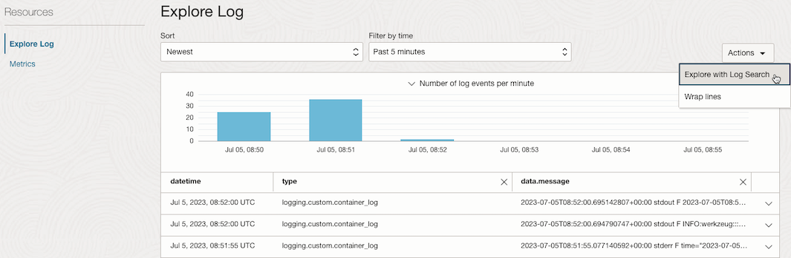
-
Custom filters 항목에서
data.message='"*customlogtest*"같이 검색값으로 조회하면 됩니다. Custom filters에 값을 입력하고 엔터키를 꼭 칩니다.- Log Agent를 통해 수집되는 주기가 있어 5분 내외가 걸릴 수 있습니다.
- Log Flush가 안되어 계속 기다려도 로그 조회가 안될 수 있으니, 테스트 URL 여러번 반복 접속합니다.
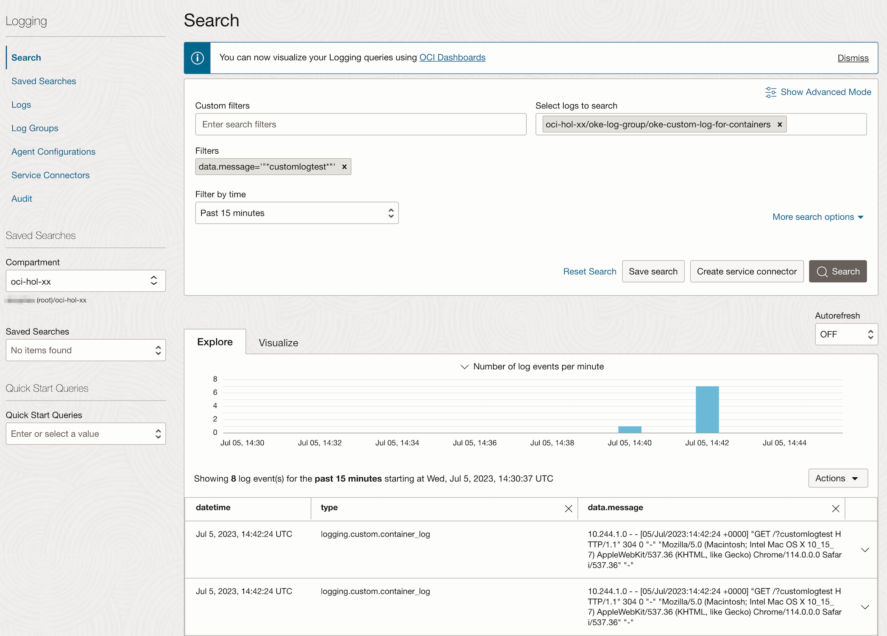
-
검색된 로그 데이터를 확인할 수 있습니다.
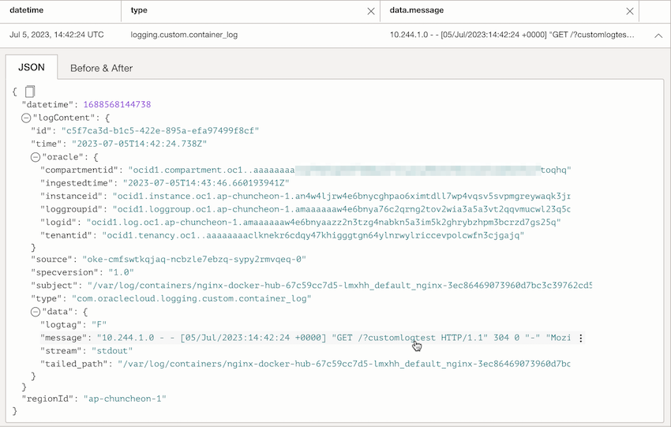
이 글은 개인으로서, 개인의 시간을 할애하여 작성된 글입니다. 글의 내용에 오류가 있을 수 있으며, 글 속의 의견은 개인적인 의견입니다.